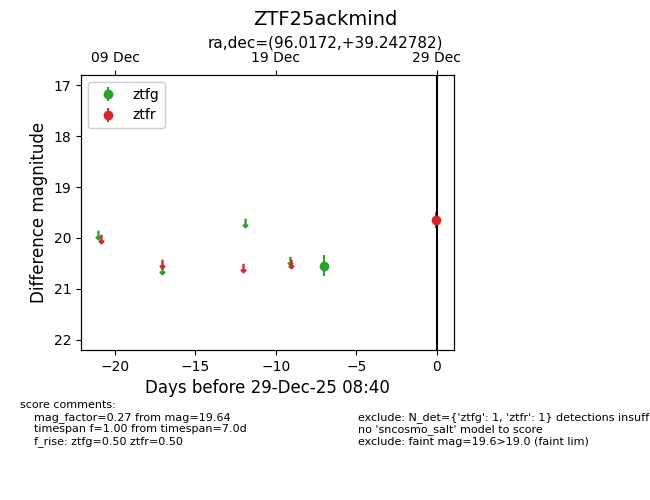
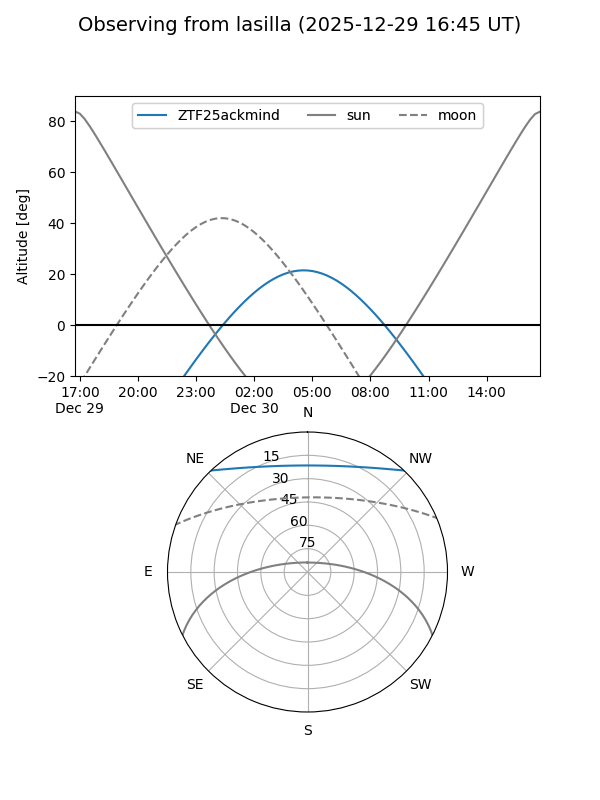
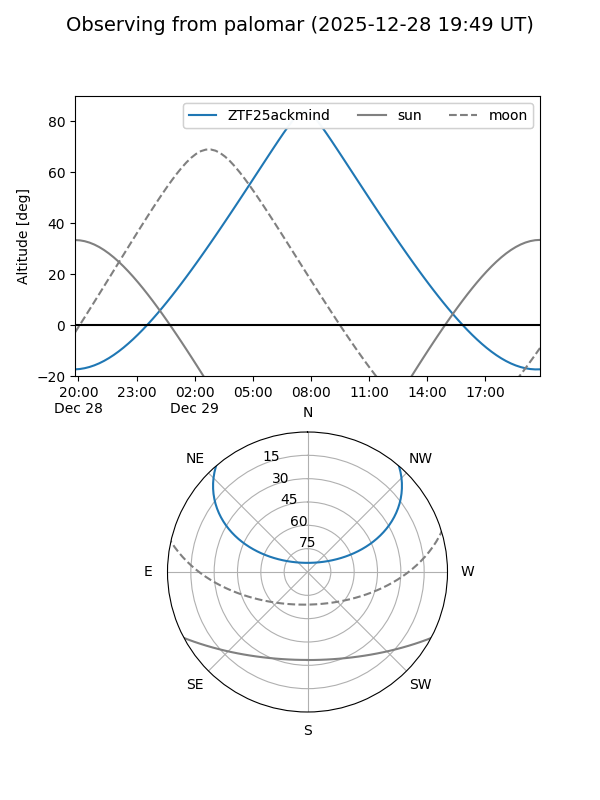

ZTF25ackmind
Target ZTF25ackmind at 2025-12-29 08:41
Aliases and brokers:
FINK: fink-portal.org/ZTF25ackmind
Lasair: lasair-ztf.lsst.ac.uk/objects/ZTF25ackmind
ALeRCE: alerce.online/object/ZTF25ackmind
alt names
ZTF25ackmind (ztf,fink_ztf)
Coordinates:
equatorial (ra, dec) = 96.0172,+39.24278
equatorial (HMS+DMS) = 06:24:04.13,+39:14:34.01
galactic (l, b) = (174.7330,+11.90806)
Flags:
Photometry:
last ztfg=20.54, ztfr=19.64
1 ztfg, 1 ztfr detections
Lightcurve

Visibility


Additional plots